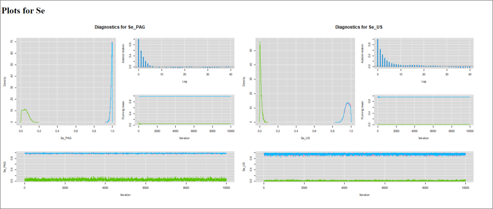

Chapter 6 Exercise 2 - Two tests
6.1 Questions
Open up the R project for Exercise 2 (i.e., the R project file named Exercise 2.Rproj).
In the Exercise 2 folder, you will find partially completed R scripts. To answer the questions, try to complete the missing parts (they are highlighted by a #TO COMPLETE# comment). We also provided complete R scripts, but try to work it out on your own first!
1. Start from the partially completed Question 1.R script located in Exercise 2 folder. We could try to estimate the Se and Sp of the PAG-based ELISA test when compared to US. We could, however, explicitly acknowledge that the US exam is not a gold-standard test. At first, we could assume that these tests are conditionally independent. We will use data from one population (herd #1). In herd #1, the cross-tabulated PAG by US results were as follows:
Table. Cross-classified results of the PAG and US tests in herd #1.
| US+ | US- | Total | |
|---|---|---|---|
| PAG+ | 138 | 10 | 148 |
| PAG- | 1 | 113 | 114 |
| Total | 139 | 123 | 262 |
How many unknown parameters do you have to estimate and how many degrees of freedom do you have? Therefore, how many informative priors will you need? Estimate PAG’s Se and Sp, and true pregnancy prevalence using informative priors on US’ Se and Sp, and on pregnancy’s prevalence. Compare your results to those of Exercise 1 (question 4) where you estimated PAG’s Se and Sp, but assuming that US was a gold standard test.
Some literature to help you with Informative priors:
In 2006, Romano et al. reported, for a US exam conducted between 28-45 days post-insemination:
-Se = 0.90 (95CI: 0.85, 0.95)
-Sp = 0.95 (95CI: 0.90, 0.97)
Moreover, in a recent study conducted on 30 Canadian herds they reported an expected pregnancy prevalence of 42% with 97.5% percentile of 74%.
2. Start from the R script that you completed in Question 1. Now run the same model, but use vague priors on all unknown parameters. Do you think it will work? What do you observe regarding the Markov chains?
3. Start from the partially completed Question 3.R script located in Exercise 2 folder. Now, we could consider that some conditional dependency exist between the two tests. For instance, it was reported that PAG concentration is higher in first parity cows (Ricci et al., 2015, Mercadante et al., 2016). US exams may also be easier to conduct on first parity cows and, thus, Se of both tests may be higher in first parity cows and lower in older cows. Build a model where conditional dependency is a possibility. How many unknown parameters and degrees of freedom do you have? Are your Markov chains behaving OK? What do you observe? Try to play with the number of iterations to reach an effective sample size (ESS) > 3,000. How are your results differing from that of question 1 (where you assumed conditional independence)?
6.2 Answers
1. We could try to estimate the Se and Sp of the PAG-based ELISA test using US as comparison. We could, however, explicitly acknowledge that the US exam is not a gold-standard test. At first, we could assume that these tests are conditionally independent. How many unknown parameters do you have to estimate and how many degrees of freedom do you have? Therefore, how many informative priors will you need? Estimate PAG’s Se and Sp, and true pregnancy prevalence using informative priors on US’ Se and Sp, and on pregnancy’s prevalence. Compare your results to those of Exercise 1 (question 4) where you estimated PAG’s Se and Sp, but assuming that US was a gold standard test.
Answer: We now have 5 unknown parameters (PAG’s Se and Sp, US’ Se and Sp, and pregnancy prevalence, P) and we have 3 degrees of freedom (i.e., one 2x2 table where three cells are providing valuable information and the content of the 4th cell can be deduced from the total number of observations minus the content of the other three cells). Thus, we need informative priors for at least 2 parameters. As suggested, we will use informative priors for 3 parameters ( US’ Se and Sp, and P), so the model is identifiable.
Table. Results assuming US is not perfect
| Parameters | Median | 95CI |
|---|---|---|
| PAG Se | 0.993 | 0.968, 1.000 |
| PAG Sp | 0.979 | 0.922, 0.999 |
| US Se | 0.923 | 0.885, 0.955 |
| US Sp | 0.970 | 0.941, 0.987 |
| Prevalence | 0.554 | 0.493, 0.614 |
As a comparison, in question 4 of Exercise 1, where we considered that US was a perfect test, we assumed that US Se and Sp was 1.0 and we estimated accuracy of PAG as:
Table. Results assuming US is perfect
| Parameters | Median | 95CI |
|---|---|---|
| PAG Se | 0.988 | 0.961, 0.998 |
| PAG Sp | 0.915 | 0.859, 0.955 |
Thus, the 10 cows that were PAG+ and US- where all considered to be a failure of the PAG test (i.e., False+ on PAG). This resulted in a lower estimated PAG specificity. Now that we indicated that US is not perfect, these disagreements are not exclusively attributed to the PAG test, hence the higher estimated PAG specificity.
2. Now run the same model, but use vague priors on all unknown parameters. Do you think it will work? What do you observe regarding the Markov chains?
Answer: Beforehand, we would say no, it will not work! We have 5 unknown parameters and only 3 degrees of freedom. The model is non-identifiable. With some data sets, though, it will sometimes work (if the number of potential solutions is very limited). This is the case here, there is so little disagreement between tests that the Markov chains were able to converge. However, they have a strange behaviour, for all parameters, we always have two chains converging in one area and another one converging at the exact opposite (see figure below). This is a case where we have a mirror solution. When such situation arise, we could consider adding informative priors for at least one other parameter (to make the model identifiable). However, remember that mirror solutions may arise even in LCM that are identifiable. In this latter case, we would have to exclude the Markov chain producing the “biologically impossible” results or to modify the set of initial values of the problematic Markov chain.

3. Build a model where conditional dependency is a possibility. How many unknown parameters and degrees of freedom do you have? Are your Markov chains behaving OK? What do you observe? Try to play with the number of iterations to reach an effective sample size (ESS) > 3,000. How are your results differing from that of question 1 (where you assumed conditional independence)?
Answer: We have 7 unkown parameters (PAG’s Se and Sp, US’ Se and Sp, P, covp, and covn). We still only have 3 degrees of freedom, so we need informative priors on 4 parameters. We can use the Romano et al. (2006) derived priors for US’ Se and Sp, and use our pregnancy prevalence informative prior. We can use the natural bounds of covp and covn proposed by Dendukuri and Joseph (2001) as priors for these parameters.
We initially ran the LCM for 11,000 iterations (with a burn-in of 1,000). The Markov chains were still cycling up and down for some of the parameters (Se_PAG and covp were the worst; see Se_PAG below). But it is still cycling in a very tight space (i.e., check the Y-axis scale). Autocorrelation seems to be a problem (especially for Se_pag and covp, again).

The ESS for these two parameters were both around 170. So, despite the 30,000 values (3 chains times 11,000 iterations, minus the 1,000 burn-in of each chain) stored during the Monte Carlo simulation, there is just the equivalent of 170 independent values. This would be quite a small sample to report with precision the median, 2.5th, and 97.5th estimates. Using the exact same model, but with a number of iteration of 201,000, we obtained ESS >3,500 for all parameters.
Table. Results of the LCM assuming or not conditional independence between diagnostic tests.
| Conditional independence LCM | Conditional dependence LCM | ||||
|---|---|---|---|---|---|
| Parameters | Median | 95CI | Median | 95CI | |
| PAG Se | 0.993 | 0.968, 1.00 | 0.952 | 0.866, 0.998 | |
| PAG Sp | 0.979 | 0.922, 0.999 | 0.924 | 0.833, 0.988 | |
| US Se | 0.923 | 0.885, 0.955 | 0.906 | 0.847, 0.947 | |
| US Sp | 0.970 | 0.941, 0.987 | 0.951 | 0.899, 0.981 | |
| covp | NA | NA | 0.035 | 0.000, 0.104 | |
| covn | NA | NA | 0.032 | 0.002, 0.079 | |
| Prevalence | 0.554 | 0.493, 0.614 | 0.555 | 0.479, 0.634 |
When we compare the LCM assuming conditional independence vs. the one allowing conditional dependence, we can see that the tests’ Se and Sp estimates are slightly lower in the model allowing conditional dependence. Indeed, in that model the covariance terms, covp and covn, where small, but positive. Remember, in the model allowing for conditional dependence, the agreement between tests is now due to the PAG and US accuracy parameters (e.g., their Se) plus a small value due to their covariance (e.g., covp). Therefore, the tests accuracy parameters estimates will be reduced as their covariance is increased.